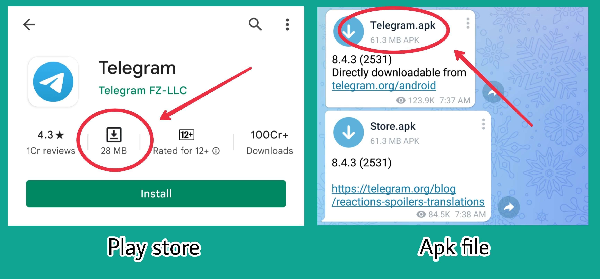
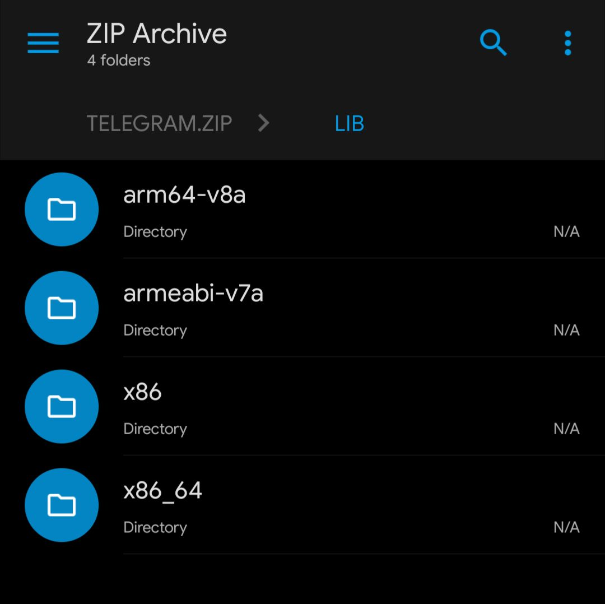

പ്ലേ സ്റ്റോറിന് വെളിയിൽ നിന്ന് ആപ്പുകൾ (apk) ഡൌൺലോഡ് ചെയ്ത് ഫോണിൽ ഇൻസ്റ്റാൾ (sideload) ചെയ്തിട്ടുള്ളവരാണ് / ചെയ്യാറുള്ളവരാണ് നമ്മൾ...
ചില ആപ്പുകൾ apk ഫയൽ ഡൌൺലോഡ് ചെയ്യുമ്പോൾ അതിന്റെ size, പ്ലേ സ്റ്റോറിൽ ഉള്ള അതേ ആപ്പിന്റെ size നേക്കാൾ കൂടുതൽ ആയിട്ടുള്ളത് ശ്രദ്ധിച്ചിട്ടുണ്ടാവും.
ഉദാഹരണത്തിന്, ടെലഗ്രാമിന്റെ ഏറ്റവും പുതിയ വേർഷൻ പ്ലേ സ്റ്റോറിൽ കാണുന്നത് 28MB യും അതേ വേർഷന്റെ തന്നെ ടെലഗ്രാമിന്റെ ഒഫീഷ്യൽ ചാനലിലുള്ള apk ഫയൽ 61MB യും ആണ്.

ഗൂഗിളിൽ സെർച്ച് ചെയ്തു കിട്ടുന്ന ഇത്തരം apk ഫയൽസ് കണ്ടിട്ട് ഇനി അവർ അതിനകത്തു വല്ല spyware ഉം add ചെയ്തിട്ടാണോ ഇത്രയും size difference എന്ന് എപ്പോളെങ്കിലും ചിന്തിച്ചിട്ടുണ്ടോ?
എന്തുകൊണ്ടാണ് ഈ size difference?
ഓരോ ആൻഡ്രോയ്ഡ് ഫോണിനും വ്യത്യസ്ത CPU ആണുള്ളത്. അതുകൊണ്ടുതന്നെ ഓരോന്നിനും യോജിച്ച രീതിയിൽ വെവ്വേറെ കോഡുകൾ ഉൾപ്പെടുത്തിയാണ് ഡെവലപ്പർ ആപ്പ് പാക്കേജുകൾ (apk) ഉണ്ടാക്കുന്നത്.
armeabi-v7a, arm64-v8a, x86, x86_64 ഒക്കെ ഇങ്ങനെ വ്യത്യസ്തങ്ങളായ cpu architectures ആണ്. (ABI)
(നിങ്ങളുടെ ഫോണിന്റെ ABI specs അറിയാൻ DRM info എന്ന ആപ്പ് ഉപയോഗിക്കാം)
ഇങ്ങനെ എല്ലാ ഫോണിനും സപ്പോർട്ട് ആവുന്ന വിധത്തിലുള്ള universal apk ഫയലാണ് നമ്മൾ മുകളിൽ ടെലഗ്രാമിന്റെ ഒഫീഷ്യൽ ചാനലിൽ കണ്ടത്. മേൽപ്പറഞ്ഞ ABI ഉള്ള ഡിവൈസുകളിൽ എല്ലാം വർക്ക് ചെയ്യാനുള്ള resources ഈ ഒറ്റ apk ഫയലിൽ ഉണ്ടാവും.
എന്നാൽ Telegram, Twitter, WhatsApp അടക്കമുള്ള popular ഡെവലപ്പേഴ്സ് ഒക്കെ പ്ലേ സ്റ്റോറിൽ ആപ്പുകൾ സബ്മിറ്റ് ചെയ്യുന്നത് AAB (Android App Bundle) എന്ന ഫോർമാറ്റിൽ ആണ്. So, play store ൽ നിന്ന് ഡൌൺലോഡ് ആവുന്ന ഫയലിൽ നമ്മുടെ ഫോണിന്റെ specifications അനുസരിച്ച് അതിനു വേണ്ട resources മാത്രമേ ഉണ്ടാവൂ. അതുകൊണ്ടാണ് universal apk യെ അപേക്ഷിച്ച് അതിന് size കുറവ്.

NB: വിശ്വാസ്യയോഗ്യമായ ഇടങ്ങളിൽ നിന്നു മാത്രമേ apk ഫയലുകൾ ഡൌൺലോഡ് ചെയ്ത് ഇൻസ്റ്റാൾ ചെയ്യാവൂ.
Related topics:
• ആൻഡ്രോയ്ഡ് ആപ്പുകൾ APK യിൽ നിന്ന് AAB ലേക്ക്...
• APK ഫയലുകൾ ഇനി ടെലഗ്രാമിനുള്ളിൽ തന്നെ Virustotal ബോട്ട് വെച്ച് സ്കാൻ ചെയ്യാം